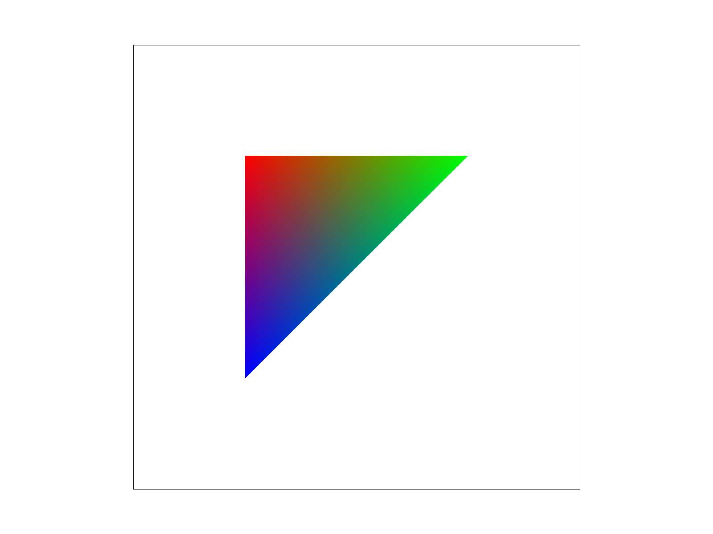

Triangles are rasterized by looking at candidate points (the points in the rectangular bounding box of the triangle) and drawing it if it is within the bounds of the triangle. I check if the point is in the triangle by using 3 line tests. We are checking the inside of the triangle instead of the outside because the edges are chosen to be next point minus the current point and the points are ordered clockwise.
My algorithm is no worse than a naive bounding box candidate point approach because it is the naive bounding box candidate point approach!!
test4.png
My supersampling algorithm rasterizes high resolution triangles using Task 1's algorithm into sample_buffer then averages over blocks to get the pixel colors for the final image in rgb_framebuffer_target. Supersampling is useful because we get less jaggies--straight, diagonal edges look smoother to a human eye because there are no sharp corners. To make this change, I made the sample_buffer larger to accommodate the high resolution image, plotted the triangles, lines, and points to this larger image, and then added a block averaging step when retrieving rgb_framebuffer_target from sample_buffer. This supersampling antialiased my triangles because I sampled more points based on the triangle edges (which have "infinite" resolution).
test4.png
Cubeman is waving with its left arm on its hip! Hi!!
my_robot.png
Barycentric coordinates are a coordinate system relative to the vertices of a triangle. It uses a weighted average of the vertex positions to determine (x,y) coordinates. For example, in the image below, the closer you are to a "red" vertex, the redder the pixel. The closer you are to a "green" vertex, the greener the pixel. The same for blue. We write the coordinates as (alpha, beta, gamma) for how much each vertex is weighted.
colored_triangle.png
test7.png
Pixel sampling is when you interpolate among multiple pixels to better estimate the value of a pixel in between them. To implement nearest neighbor sampling for texture mapping, I rounded u*width and v*height (texture coordinates) to the nearest integer to retrieve the color from the array. To implement bilinear sampling for texture mapping, I first took the color values of the 4 pixels surrounding the desired pixel. I then interpolated the "x-coordinates" of the top 2 pixels using the proportion u to blend in the horizontal direction, then did the same for the bottom 2 pixels. Then I interpolated between those 2 results with v on the y coordinates to get the result.
When lines are thin, nearest neighbor sampling often results in blotchier results than bilinear, which is even noticeable in the zoomed out image. These differences are less noticeable when samples per pixel are greater, but the zoomed in image is still noticeably smoother for the bilinear scheme. Note that these differences are mostly present in high frequency areas of the image. The two schemes are identical over the completely blue ocean because the average of 4 samples of the same color in bilinear sampling is still the same color.
Bilinear + 1 sample/pixel
Bilinear + 16 samples/pixel
Nearest + 1 sample/pixel
Nearest + 16 samples/pixel
Level sampling is when you interpolate across mipmap levels (in bilinear level sampling) or sometimes take a nonzero mipmap level (in nearest neighbor level sampling). I first calculated the mipmap level using the formula we derived in class, which estimates how dx and dy affect du and dv with finite differences. Then I rounded the level to the closest integer and performed nearest or bilinear pixel sampling for nearest neighbor level sampling. I interpolated over the results of pixel sampling across the ceiling and floor of the calculated level in bilinear level sampling.
After implementing pixel sampling, level sampling, and the number of samples per pixel, I noticed a few things. Level sampling and number of samples per pixel were the fastest (~36 fps) while pixel sampling was slowest (~28 fps). Changing the number of pixels per sample impacted memory usage the least, while level sampling and pixel sampling increased memory usage by a bit. Qualitatively across images generated in previous tasks, the antialiasing power of pixel sampling is the strongest because it smoothes lines across a larger area than increasing the number of pixels per sample, and it activates even on mipmap level 0. Level sampling paired with pixel sampling and a slight increase on samples per pixel is the winner overall, so it seems to always be better to use a bit of all techniques.
Supersampling 16 samples/pixel
Pixel bilinear interpolation
Mipmap level bilinear interpolation
Below are some combinations of zero/nearest level sampling and nearest/bilinear pixel sampling. Without pixel sampling, we see more jaggies in both cases. With nearest level sampling, we see that the textures are slightly smoother because we're using a lower resolution mipmap, but the decay in quality is not too noticeable.
Bilinear + 1 sample/pixel
Bilinear + 16 samples/pixel
Nearest + 1 sample/pixel
Nearest + 16 samples/pixel